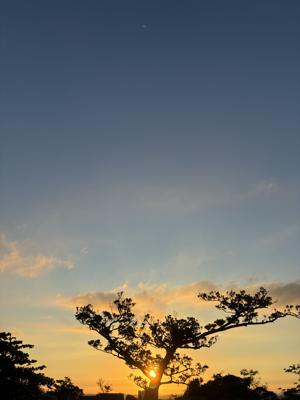
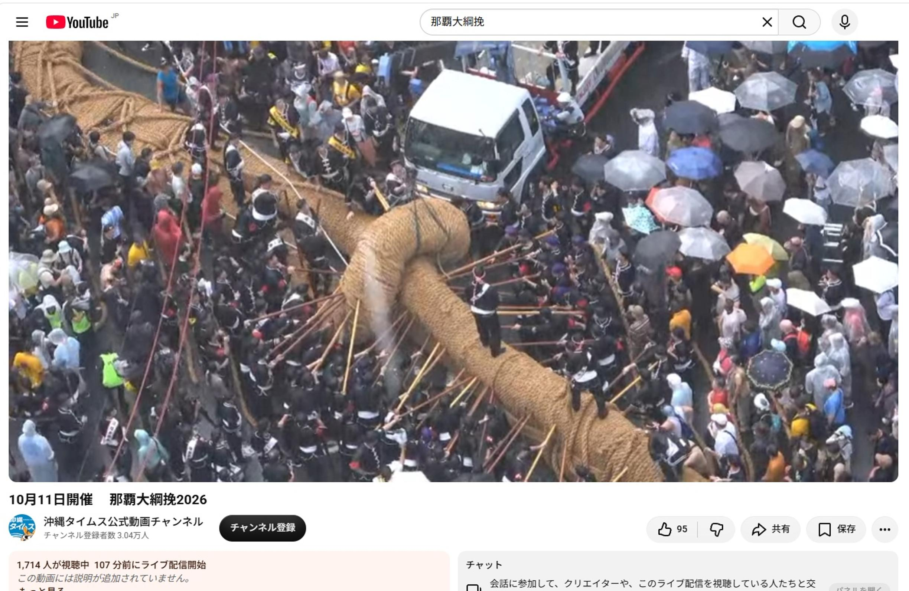
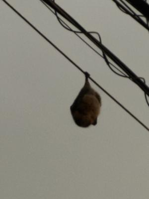

うるがいの話 ある日
最新: 松山千春【うるがいの話 ある日】とは 一日だけのプログです
『うるがいの話』の最新一日だけのプログで、通信料が少なく経済的だ。カニの画像をクリックすると全ての日付が載る『うるがいの話』サイトを表示します
|
|
【うるがいの話】 うるがい(ｳﾙｶﾞｲ urugai)とは、『もずくがに』の名前でとても大きくなります。 |
|---|---|
|
|
【カミマヤーの話】 猫のことを方言でマヤーといいます。カミマヤー（kamimayaa）とは、神の猫のことです。 |
|
【たながぁの音楽】 たながぁ（ﾀﾅｶﾞｰ tanagaa）とは手長えびのことで、何種類かあり大きいのは車 エビぐらいになります。 |

|
【ぶながぁの話】 ぶながぁ(ﾌﾞﾅｶﾞｰ bunagaa)とは、赤い髪の毛、赤い身体、そして身長は１ｍ２０ｃｍ ぐらい、川の蟹を食べているの目撃された。場所は沖縄県国頭郡大宜味村のと ある村僕の隣近所に住んでいる爺さんから、聞いた話です。 |
|
|
【ギーマの話】 ギーマ(giima)とは、山原の里山に咲くスズランに似た、 花を付けます。実は食べられます、 気が付くと口の周りが紫になっています。 |
2026年10月11日 (日）松山千春
16:26

２３時２６分到着予定のコドモを迎えに家を出ました。ラジオ
では『松山千春 ＯＮ ＴＨＥ ＲＡＤＩＯ』を放送している
。１０年以上も昔によく聞いてました。今は、夜１１時には眠
っているので聞くことはあり得ませんでした。久しぶりに聞く
声は、老人になった声がしました。

オット、ＰＣ３号で那覇大綱挽のユーチューブライブ配信をみ
ています、先ほどはテレビで見ていたのですが、綱引き開始直
前で放送時間終了となったので。画像が、揺れ動くので酔う。
さて、雨で綱が重たくなっている。どうなるのでしょうか。
あ、曳き始めました。全然、動きません。あ、コマシャールが
ん、書き込みでは既に終わったようだ。かなり、タイムラグが
あるから、チャンネル視聴者数が減ってきた。チャットを見て
いると引き分けのようだ。
あ、動画で酔って気持ち悪い。一度だけ、綱を引いたことがあ
る、真面目にやったら疲労で吐いた。コウモリさんです。
